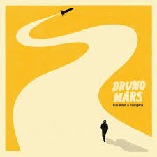

Início
Filme
Livro
Música

Título do Álbum
Influências:
Ele cresceu escutando e se inspirando em
DJ Betim do Atalaia e DJ Wesley Gonzaga
.
Faixas
Talking to the moon
It will rain
That's what i like
Locked out of heaven
Wake up in the sky
Marry you